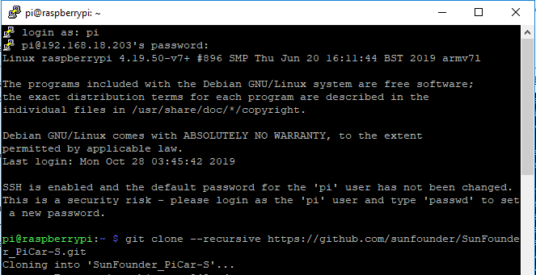
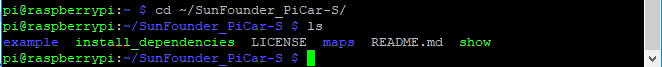
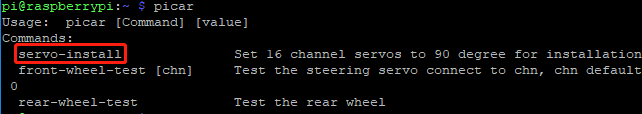
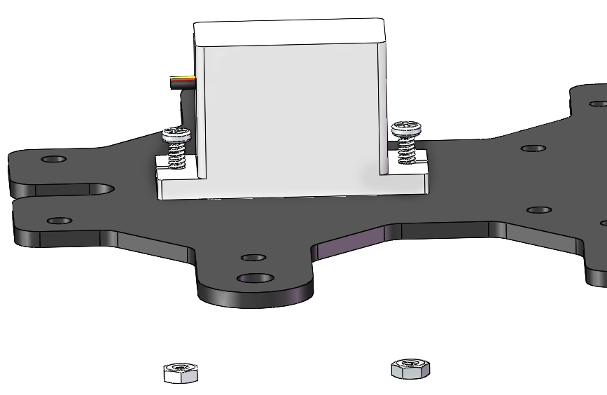
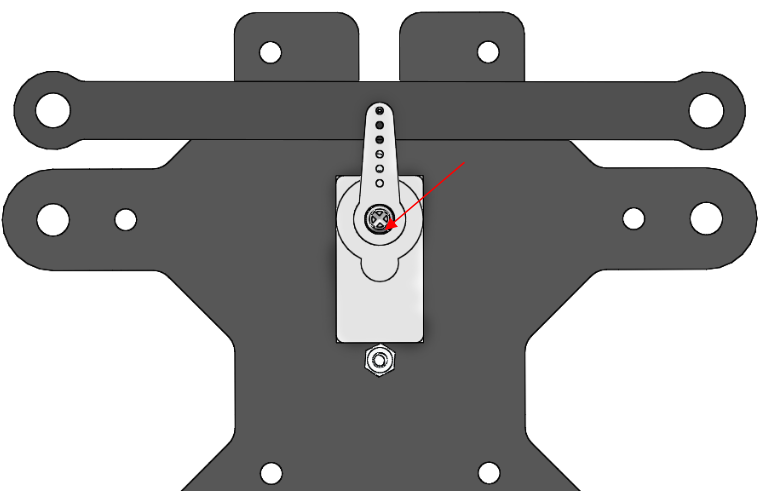
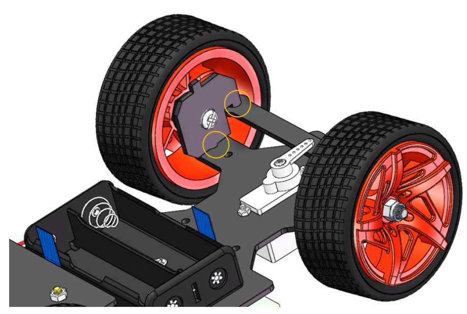
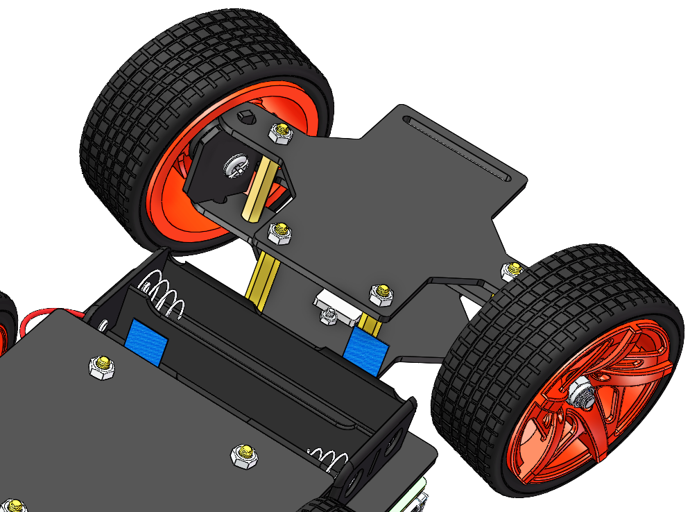
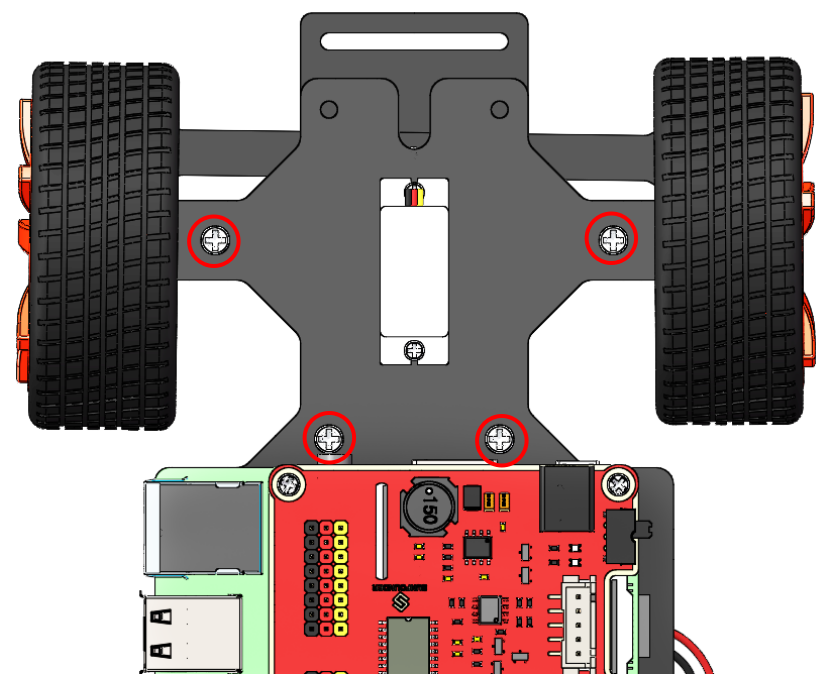

サーボ構成¶
また、このキットで使用されるサーボはソフトウェアによって調整され、他のサーボほど物理的な固定点がないため、ここではソフトウェアを介してサーボを構成する。最初に、構成の前にソフトウェアの実装を完了してください。
注釈
本章では、バッテリーを取り付けて電源スイッチをONにスライドすることを忘れないでください。
ソースコードを取得する¶
ソースコードはGithubリポジトリにある。git cloneでソースコードをダウンロードする：
git clone --recursive https://github.com/sunfounder/SunFounder_PiCar-S -b V3.0
注釈
入力時に十分に注意してください。ユーザー名とパスワードの入力を求められた場合は、入力を間違えている可能性がある。それは発生した場合、Ctrl+Cを押して終了し、再試行してください。
**ls**コマンドで確認すると、コードディレクトリ**SunFounder_PiCar-S**が表示される：
コードディレクトリに入る¶
cd ~/SunFounder_PiCar-S/
コードディレクトリに入ると、インストールスクリプトが表示される：
スクリプトを介して環境をインストールする¶
インストールスクリプトを使用して、必要なすべてのソフトウェアと構成を実行することはできる。代わりに一歩一歩に実行する場合は、「付録1：手動によるインストール」の手順に従ってください。
sudo ./install_dependencies
注釈
1. The installation script will install the required components and configure for the running environment. Make sure your Raspberry Pi is connected to the Internet during the installation, or it would fail.
2. The Raspberry Pi will prompt you to reboot after the installation. You're recommended to type in yes to reboot.
サーボを90度に設定する¶
再起動後、次のコマンドを入力する：
picar
ここに3つのコマンドが表示される。
最初の1つは、前輪を組み立てた後に使用する**サーボ調整**用の**servo-install**である。このコマンドを実行するとサーボが90度回転するため、ここではこのコマンドを使用する。
picar servo-install
注釈
「OSError：[Errno 121] Remote I/O error」エラーメッセージが表示された場合は、raspi-configを開く：
sudo raspi-config
次に、3 Interfacing Options → <P5 I2C> →<YES> → <OK>を選択してI2Cサービスを有効にします。 キーボードの上、下、左、右のキーを使って選択できます、最後は<Enter>キーを押して確認します。
コードの実行後、ロッカーアームをサーボに差し込む。ロッカーアームが時計回りと反時計回りに回転し、特定の位置で停止する。サーボが良い状態にあると示す。以下の条件のいずれかがサーボに発生した場合、サーボは不良である：
雑音あり、熱い。
サーボラインを抜いてロッカーアームを回すと「カ」「カ」「カ」のように聞こえるか、またはギアの駆動音が鳴らさない。
ゆっくりで継続的に回してください。
上記の状況のいずれかが発生した場合は、**`service@sunfounder.com <mailto:support@sunfounder.com>`__**に送信してください。新品に交換してあげる。使用または組み立ての過程で破損した場合は、公式ウェブサイト `www.sunfounder.com <http://www.sunfounder.com>`__にて購入してください。
車の残り部分を組み立てる¶
警告
アセンブリのプロセス全体で、servo-installコマンドを実行し続けてください。
2つの**M2x8ネジ**と**M2ナット**を使ってステアリングサーボを上部プレートに取り付ける（サーボワイヤーの方向に注意してください）：
**ロッカーアーム固定ネジ**（最短）で**ステアリングリンケージ**を**ロッカーアーム**に接続する。
ホイールを上部プレートに入念に取り付ける。
次に、組み立てられたフロントハーフシャーシを、スタンドオフを穴に合わせている上部プレートに置く。
入念に持ち、上下を逆にして、4本の**M3x8ネジ**でスタンドオフと上部プレートを固定する。
これで、アセンブリ全体が完了した。おめでとう！